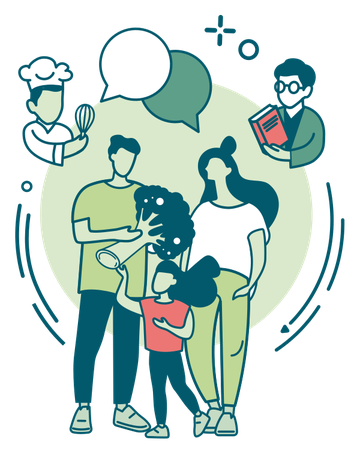
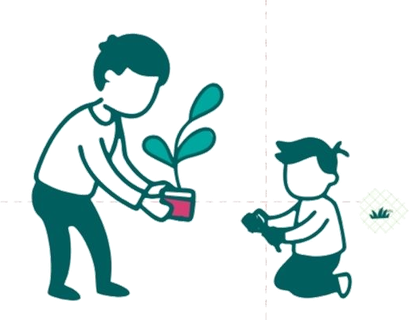

Une diversité d'acteur·rices engagé·es
Le Lab rassemble des professionnel·les actifs à différents niveaux de l'éducation à l'alimentation des enfants en Suisse. Le collectif s'élargit en continu pour toucher de nouvelles communautés.

Familles
Parents et tuteur·rices au cœur de la transmission des compétences alimentaires au quotidien.

Cantines & cuisinier·ères
Professionnel·les qui façonnent l'expérience alimentaire des enfants dans les écoles et structures parascolaires.

Enseignant·es & éducateur·rices
Pédagogues qui intègrent l'éducation à l'alimentation au quotidien scolaire et péri-scolaire.

Médecins & soignant·es
Pédiatres, diététicien·nes et professionnel·les de la santé qui accompagnent familles et enfants.

Acteur·rices locaux
Producteur·rices, agriculteur·rices, associations qui ouvrent le lien entre la terre, la ferme et l'assiette.

Institutions & politique
Cantons, communes et décideur·euses qui pilotent les politiques publiques de santé et d'éducation.